Bayesian Inference with Quantile-Parameterized Distributions
Encoding and updating uncertain judgments
Dmytro Perepolkin
PhD student, CEC
Lund University
2022-09-19
Roadmap
We will touch on some of the following:
- Fitting the distribution to judgments and data.
- Smooth beliefs. QPD priors.
- Quantile-based inference
- Quantile based prior and likelihood.
- Quantile-based quantile-parameterized likelihood.
- Chronic bitter chocolate consumption example.
- Parametric quantile regression (interlude).
- Cumulative science and posterior passing
Fitting a distribution
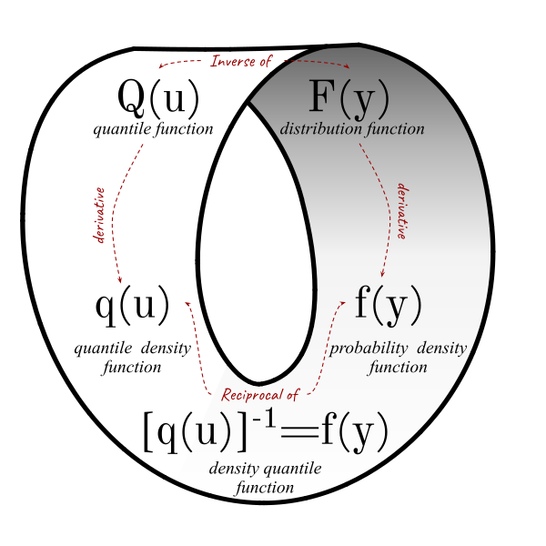
- Fitting to data 🤔
- Posterior samples.
- Data-first: [e]CDF
- Fitting to judgments1
- Quantile-probability pairs.
- Probability-first: QF
- Equally plausible ways to define a distribution (Tukey 1965)
- CDF/PDF: density-defined distributions
- QF/QDF: quantile distributions
\[ f(Q(u))=\frac{dF(Q(u))}{dQ(u)} = \frac{dF(Q(u))/du}{dQ(u)/du} = \frac{dF(F^{-1}(u))/du}{q(u)}=[q(u)]^{-1} \]
Fitting a distribution

Judgments: junk or jewels?
- Inconsistent beliefs (Olsson 2006; Sahlin 1990)
- Sampling from beliefs (Hartmann et al. 2020) vs fitting to beliefs (Perepolkin, Goodrich, and Sahlin 2021a)
Elicit QPPs and fit a “known” distribution
- familiar \(\approx\) convenient \(\neq\) suitable (O’Hagan et al. 2006)
- \(X\in [0,1]\)? Use Beta!
- Or Kumaraswamy? \(Q(u|a,b)=(1-(1-u)^{\frac{1}{b}})^{\frac{1}{a}}\)
Smooth beliefs
Drawing a curve through Q-P pairs
- Infinite number of ways
- Need a closed-form CDF (and QF?)
- Problem of the tails & bounds
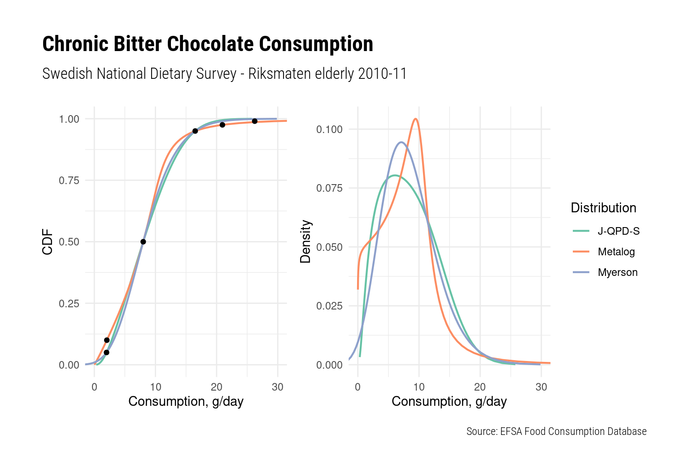
Making your own QPD:
| Reparameterization | Implicit function |
|---|---|
| Fix \(p\) elicit \(q\) | Elicit \(p,q\) |
| Symmetrical Percentiles | Arbitrary percentiles2 |
| Myerson, J-QPD, GLD(CSW) | Metalog, SQN |
Let’s look at some examples
* Quantile distributions
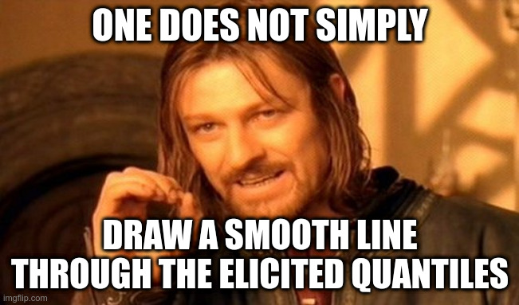
Closer look: Myerson distribution
The quantile function parameterized by three quantile values \(q_1,q_2,q_3\) and a tail parameter \(\alpha\) (Myerson 2005)
\[ \rho=q_3-q_2;\; \beta=\frac{\rho}{q_2-q_1};\; \kappa=\frac{\Phi^{-1}(u)}{\Phi^{-1}(1-\alpha)}\\ Q_Y(u|q_1,q_2,q_3,\alpha)=\begin{cases} q_2+\rho\frac{\beta^{\kappa}-1}{\beta-1}, \quad &\beta \neq 1\\ q_2+\rho\kappa, \quad &\beta =1 \end{cases} \]
where \(u\) is the depth corresponding to the observations of \(Y\) given the quantile triplet \(\{q_1, q_2, q_3\}\), corresponding to probabilities \(\{\alpha, 0.5, 1-\alpha\}\). The quantile parameterization is made possible by \(\kappa\) which takes values \(\{-1,0,1\}\) for the quantiles \(\{q_1, q_2, q_3\}\), so that \(Q(\alpha)=q_1\), \(Q(0.5)=q_2\) and \(Q(1-\alpha)=q_3\).
Logit Myerson distribution
We could replace the \(\Phi^{-1}\) with \(\text{logit(u)}=\ln\left(\frac{u}{1-u}\right)\) (closed form, simpler, higher kurtosis) so that \(\kappa=\frac{\text{logit}(u)}{\text{logit}(1-\alpha)}\)
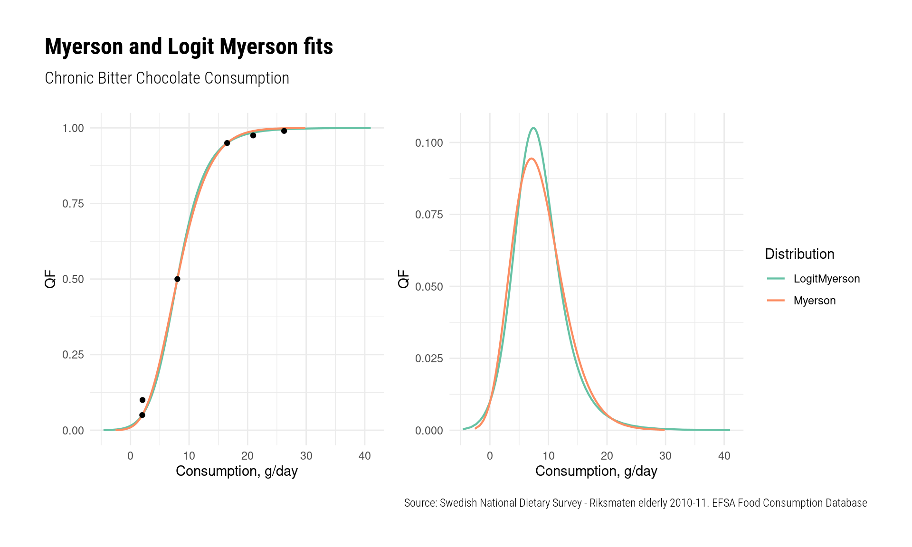This can be done with any symmetric standard quantile function, e.g. hyperbolic secant \(\ln[\tan(\pi u/2)]\) or even Cauchy \(\tan(\pi(u-1/2))\).
Implicit function parameterization
Simple Q-Normal distribution (Keelin and Powley 2011) expands the \(\mu\) and \(\sigma\) parameters in the Normal distribution quantile function \(Q_Y(u\vert\mu,\sigma)=\mu+\sigma\Phi^{-1}_Y(u)\) to be the function of the depth \(u\), so that \(\mu(u)= a_1+a_4u\) and \(\sigma(u)=a_2+a_3u\). Thus the SQN QF is a linear combination
\[ Q_Y(u|a_1,a_2,a_3,a_4)=a_1+a_2\Phi^{-1}(u)+a_3u\Phi^{-1}(u)+a_4u \]
Because \(Q(p)=x\) the parameters \(a_1,\dots,a_4\) can be determined using four quantile-probability pairs \(\{p_i,x_i\}, \; i=\{1,2,\dots4\}\) plugged into the matrix equation \(a=\mathbb{P}^{-1}x\), where \(\mathbb{P}\) is an invertible matrix
\[ \mathbb P=\begin{bmatrix} 1 & \Phi^{-1}(p_1) & p_1\Phi^{-1}(p_1) & p_1\\ 1 & \Phi^{-1}(p_2) & p_2\Phi^{-1}(p_2) & p_2\\ 1 & \Phi^{-1}(p_3) & p_3\Phi^{-1}(p_3) & p_3\\ 1 & \Phi^{-1}(p_4) & p_4\Phi^{-1}(p_4) & p_4\end{bmatrix} \]
Metalog distribution (Keelin 2016) expands parameters in the logistic QF with a finite Taylor series of \(n\) terms in a similar manner3.
Closer look: SQN and Metalog
Quantile function is valid iif it is non-decreasing on the whole \([0,1]\) interval (Gilchrist 2000).
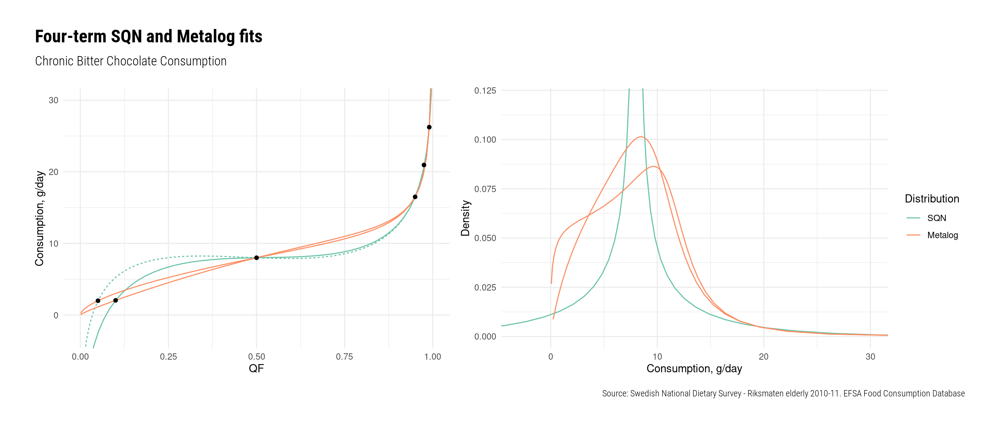Unfortunately, small change in the parameterizing quantiles can lead to an invalid quantile function. The feasibility conditions for 4-term metalog/SQN are studied in Keelin and Powley (2011) and Keelin (2017). General solution is, unfortunately, not available.
Quantile-parameterized prior: CDF
Let the hyperparameter \(\psi=\{q_1, q_2, q_3, \alpha\}\) for Myerson distribution of parameter \(\mu\) in Normal model with a known variance.
\[ Y \sim Normal(\mu, \sigma)\\ \mu \sim Myerson(\psi)\\ \dots \]
In this model, the posterior distribution of \(\mu\) given the sample \(\underline{y}\) can expressed as
\[ f(\mu|\underline{y})\propto \mathcal{L}(\mu,\sigma;\underline{y})f(\mu\vert\psi) \]
where \(f(\mu\vert\psi)\) is the (prior) PDF of the Myerson distribution. Note that the prior distribution of \(\mu\) is defined by three quantiles \(\{q_1, q_2, q_3\}\) and a tail parameter \(\alpha\).
Quantile-parameterized prior: QF
Quantile-parameterized prior can also be defined by the QF
\[ Y \sim Normal(Q_\mu(u), \sigma)\\ u \overset{\mu}{\backsim} Myerson(\psi)\\ \dots \]
In this model, the posterior distribution of the degenerate random variate \(u\), representing the value of the parameter \(\mu\) given the sample \(\underline{y}\) can expressed as
\[ [q_\mu(u|\underline{y})]^{-1} \propto \mathcal{L}(Q_\mu(u\vert\psi),\sigma;\underline{y})[q_\mu(u \vert \psi)]^{-1} \lvert q_\mu(u|\psi)\rvert \implies\\ [q_\mu(u|\underline{y})]^{-1} \propto \mathcal{L}(Q_\mu(u\vert\psi),\sigma;\underline{y}) \]
where \([q(u\vert\psi)]^{-1}\) is the (prior) DQF of Myerson distribution and \(\lvert q_\mu(u|\psi)\rvert\) is the Jacobian adjustment.
Density-defined and quantile-based priors lead to the same posterior beliefs.
Quantile-parameterized likelihood
In order to enable learning, the \(\{q,p\}\) pairs (QPPs) need to be allowed to vary. Any new set of drawn “QPP parameters” need to remain a valid QPT (e.g. no overlaps).
- Dependence between points can be specified using:
- Covariance matrix
- Multivariate distribution
- “Monotonicity constraint” (Bürkner and Charpentier 2020)
- Look at the probability intervals as categories (adding up to 1)
- We can assign a Dirichlet prior to the uncertainty about the width of the probability bands
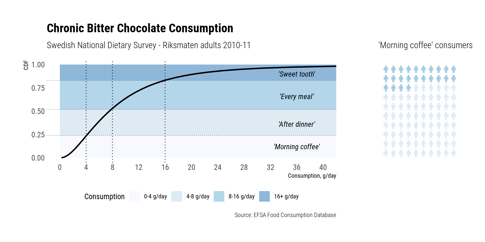
Quantile-parameterized likelihood
Dirichlet/CM (Elfadaly and Garthwaite 2013) prior for probability “bands” corresponding to fixed vector of \(q*\) ➡ QDirichlet prior
We can represent probabilities as relative frequencies from a hypothetical sample (Hoffrage et al. 2002)
Interviewer: Consider a sample of bitter chocolate consumers, say 100 people. According to your assessment there should be only 24 people that consume up to one bit of chocolate a day. We will interpret this assessment as you believing that there’s about equal chance that the actual number of morning coffee consumers (0-4 g/day) in this sample will be above or below 24, i.e we will interpret it as the median assessment. Would you like to reconsider this value?
Hybrid elicitation
Conditional* SPT for each band; last band assessed as \((1-\sum p)\). Fit Beta distribution to each triplet. Assemble into parameter vector(s) of Dirichlet (CM) distribution (Elfadaly and Garthwaite 2013)
| Category | P25 | P50 | P75 | |
|---|---|---|---|---|
| 1 | Morning coffee (0-4 g/day) | 20 | 24 | 30 |
| 2 | After dinner (4-8 g/day) | 25 | 31 | 36 |
| 4 | Sweet tooth (16+ g/day) | 5 | 15 | 20 |
Encoded into the Dirichlet vector \(\alpha=\{ 13.10, 13.72, 2.12, 4.34\}\) describing uncertainty in the cumulative probabilities corresponding to the quantile values \(q^*=\{4,8,16\}\).
Result: 2D distribution characterizing the uncertainty in the quantiles of the hypothetical sample
Note: implied correlation structure
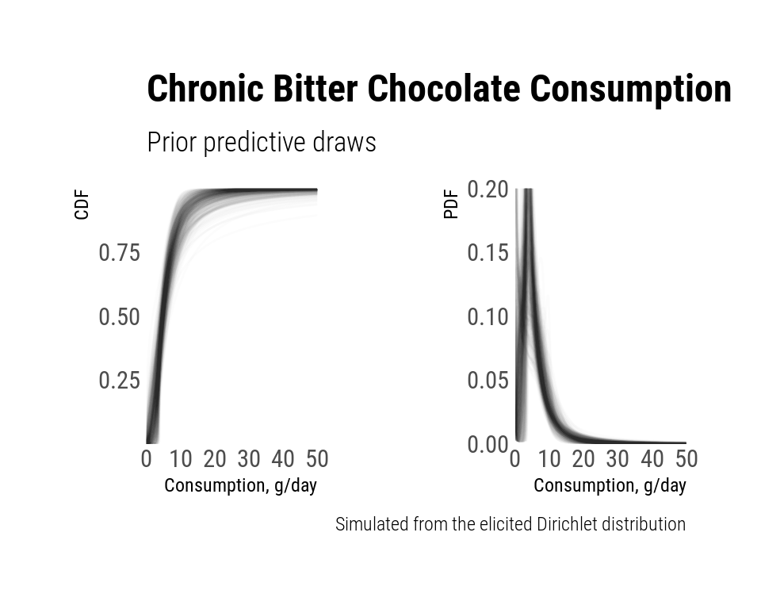
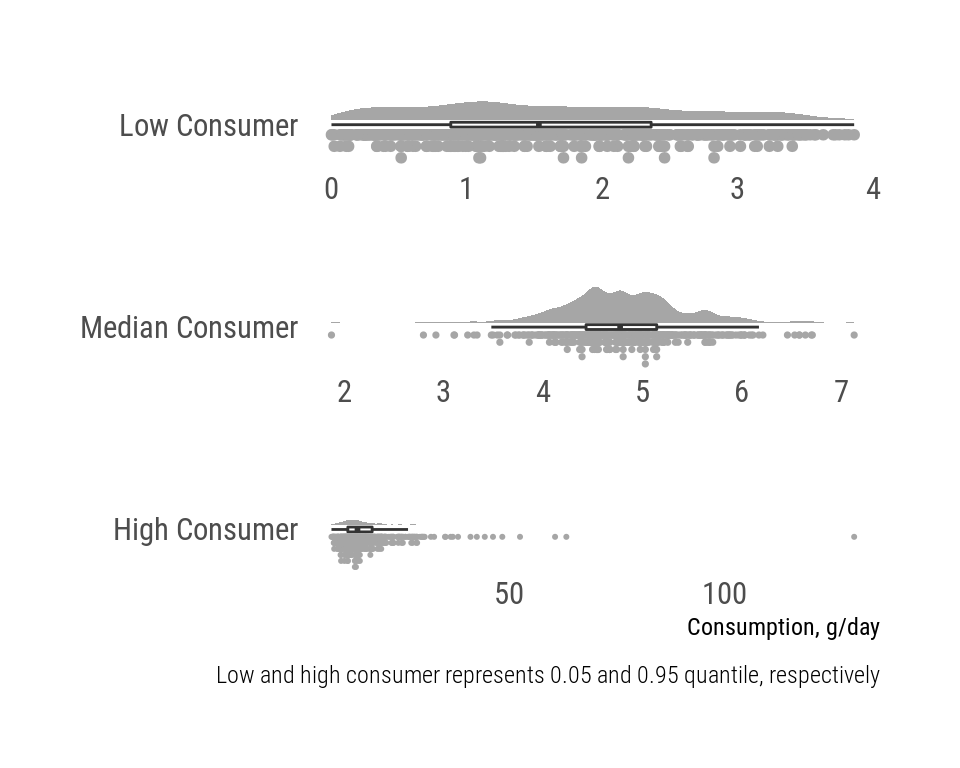
QDirichlet-Metalog model
- Elicit the vector of quantile values \(q^*\)
- Elicit uncertainty in associated cumulative probabilities (possible values of \(p\))
\[ \begin{aligned} &\Delta \sim Dirichlet(\alpha|q^*);\\ &p \equiv \Xi_1^n(\Delta)\\ & u \eqsim \widehat {Q^{-1}_X}(x\vert p,q^*)\\ &u \overset{x}{\backsim} Metalog(p,q^*) \end{aligned} \]
where \(\Xi\) is the cumulative sum operator and \(\widehat {Q^{-1}_X}\) is numerically estimated inverse of Metalog quantile function. The density is calculated using the DQF.
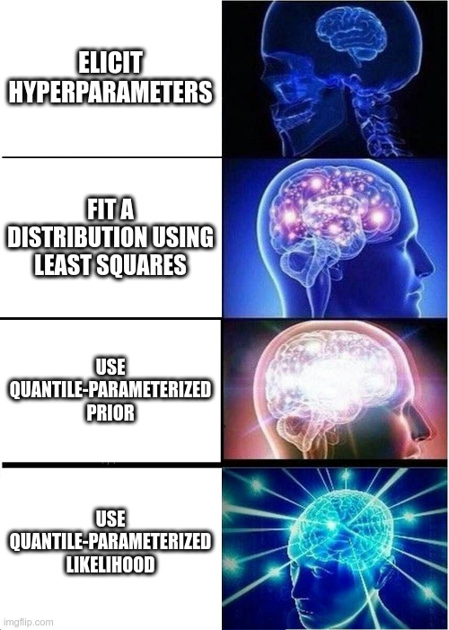
Quantile-based inference
Bayesian updating can be restated in terms of quantile functions and their densities (Nair, Sankaran, and Dileepkumar 2020; Perepolkin, Goodrich, and Sahlin 2021b)
Given a random sample of \(\underline {y}\) of size \(n\) we can compute \(\underline {Q}=\{Q(u_1), Q(u_2), \dots Q(u_n)\}\), such that \(u_i=F(y_i\vert\theta)\), \(i=\{1,2,\dots,n\}\).
\[ \begin{align} f(\theta\vert\underline{y}) \propto &\mathcal{L}(\theta;\underline{y})f(\theta)\\ \Downarrow\\ f(\theta\vert\underline{Q}) \propto &\mathcal{L}(\theta;\underline{Q})f(\theta)\\ &\mathcal{L}(\theta;\underline{Q})= \prod_{i=1}^nf(Q(u_i|\theta))=\prod_{i=1}^n[q(u_i|\theta)]^{-1} \end{align} \]
Since the likelihood \(\mathcal{L}\) is expressed in terms of the depths \(u_i\vert\theta\), additional step is required to arrive at \(\underline{u}=F_Y(\underline{y}\vert\theta)=\widehat{Q_Y^{-1}}(\underline{y}\vert\theta)\) for quantile distributions (Perepolkin, Goodrich, and Sahlin 2021b)
Implementation
- Sample a simplex, aggregate, combine with \(q^{*}\) and converted into metalog \(a\) vector using the matrix equation above.
- Approximate values of depth \(u\) by root-finding
- Compute log-likelihood using Metalog DQF
parameters {
simplex[4] delta; // dirichlet sample - a simplex
}
transformed parameters{
// go from indexed-delta-quantile parameterization to metalog a-coeffs
vector[3] as = logmetalog_reparameterize(delta, idx, qntls, bl);
}
model {
vector[N] u;
// create grid of xs given the parameter for initial guesses of u
vector[M] xs_grd = logmetalog3_v_qf(ys_grd, as, bl);
vector[N] u_guess = vlookup(x_srt, xs_grd, ys_grd);
target += dirichlet_lpdf(delta | a);
for (i in 1:N){
u[i] = approx_cdf_algebra(x_srt[i], u_guess[i], as, bl, rel_tol, f_tol, max_steps);
target += logmetalog_s_ldqf_lpdf(u[i] | as, bl);
}
}TL;DR
Asking experts to provide their uncertainty about the elicited QPT is enough to quantify the uncertainty about the food consumption distribution. This approach is particularly useful when the data is sparse.
Hybrid elicitation
Observations-level parametric elicitation for quantile-parameterized models (Perepolkin, Goodrich, and Sahlin 2021a).
QDirichlet (QCM) prior is a 2D distribution, which separates aleatory and epistemic uncertainty.
QDirichlet-Metalog is a quantile-based quantile-parameterized model
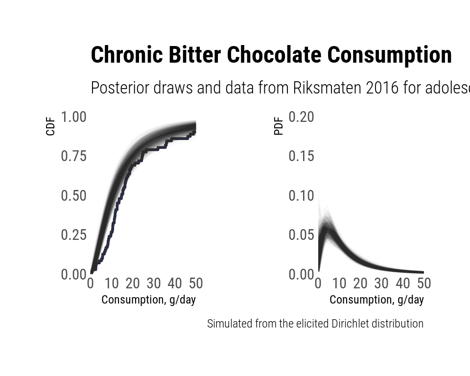
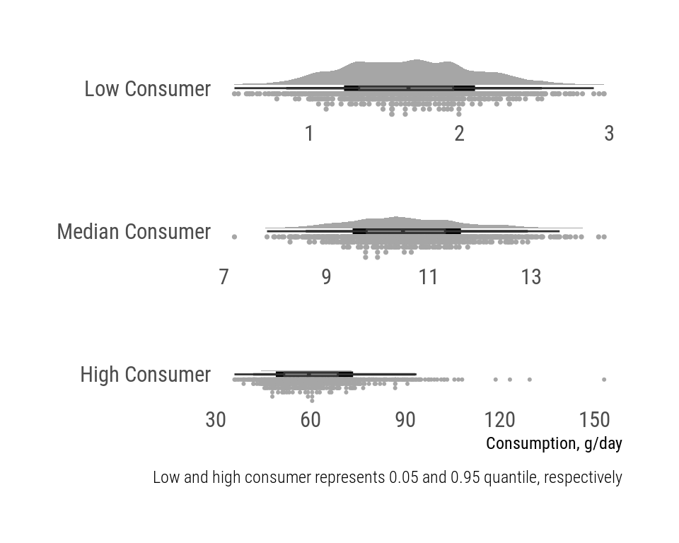
Other uses of quantile-based likelihoods
- Distributions defined by a non-invertible quantile function (GLD, Wakeby, Govindarajulu, g-and-h, g-and-k, FSLD, etc).
- More can be created using Gilchrist’s QF transformation rules (Gilchrist 2000).
Parametric quantile regression
Linear regression of \(Y\) given the covariate \(X\) can be expressed as
\[ y_i=\underbrace{\alpha+\beta x_i}_{\small{\text{deterministic term }}}+\underbrace{\varepsilon_i}_{\small{\text{stochastic term }}} \]
The distribution of the error term \(\varepsilon_i\) can be expressed through a standard quantile function \(S_\varepsilon(u_i \vert \theta)\)
\[ y_i=\alpha+\beta x_i+S_\varepsilon(u_i \vert \theta) \]
where \(S(u\vert\theta)=Q_s(u\vert\theta)-Q_s(0.5\vert\theta)\) is centered basic QF which can be generalized into regular \(Q(u|\mu,\sigma,\theta)=\mu+\sigma Q_s(u\vert\theta)\) with location \(\mu\) and scale \(\sigma\).
Parametric Quantile Regression
The whole regression equation can be expressed as a quantile function
\[ Q_Y(u_i\vert\mu_i,\theta)=\mu_i+S_\varepsilon(u_i\vert\theta) \]
where \(\mu_i=\alpha+\beta x_i\) and scale parameter \(\sigma=1\). If \(\sigma \propto x_i\) the model can capture heteroscedasticity of the error term.
Find depth \(u_i\) by inverting the PQR QF \(u_i=\widehat{Q_Y^{-1}}(y_i\vert\mu_i,\theta)\).
Because the deterministic term \(\mu_i\) in PQR QF \(Q_Y(u_i\vert\mu_i,\theta)\) is additive and does not depend on the depth \(u_i\) it can be dropped from the derivative.
\[ \begin{gathered} \left[q_Y(u_i \vert \mu_i, \theta)\right]^{-1}=\left[\frac{dQ_Y(u_i \vert \mu_i, \theta)}{du}\right]^{-1} = \left[\frac{dS_\varepsilon(u_i\vert\theta)}{du}\right]^{-1}=[q_\varepsilon(u_i\vert\theta)]^{-1} \end{gathered} \]
where \([q_\varepsilon(u_i\vert\theta)]^{-1}\) is the density quantile function of the error term.
Why bother? Explicitly modeled error term described by a flexible (possibly quantile) distribution + non-crossing posterior quantiles.
PQR example
Car stopping distance dataset (Mosteller, Fienberg, and Rourke 2013) quoted by Gilchrist (2000). 30 observations, 2 variables (speed, distance). Predict speed by distance. From physics class, \(distance \approx speed^2\). Priors for the regression parameters are elicited and fitted.
Crafting the distribution for the error term
As discussed, \(speed \propto \sqrt{distance}\). Likely heteroscedastic due to intertia.
- Expect the error to be flatter than normal, possibly skewed.
- Start with a well-known basic logistic QF \(Q_s(u)=\ln(u)-\ln(1-u)\).
- Introduce skeweness parameter \(\delta\) to weigh the exponential tails (Skew-Logistic QF) (Gilchrist 2000) \(Q_s(u)=(1-\delta)\ln(u)-\delta\ln(1-u)\).
- We can also mix in the uniform distribution to allow for thicker tails (Flattened Skew-Logistic QF)
\[ Q_s(u\vert\eta, \delta,\kappa)=\eta\left[(1-\delta)\ln(u)-\delta\ln(1-u)+\kappa u\right] \]
where \(\eta,\kappa>0\) and \(0\leq\delta\leq1\).
If we make the shape parameter \(\eta\) to be dependent on the covariate \(x_i\), the error term model can capture heteroscedasticity.
Parametric Quantile Regression model
\[ f(\alpha, \beta, \theta \vert \underline{Q_Y},\underline{x}) \propto \mathcal{L}(\theta;\underline{Q_Y},\alpha, \beta, \theta, \underline{x})f(\theta) \\ \mathcal{L}(\theta;\underline{Q_Y}, \alpha, \beta, \theta, \underline{x}) = \prod_{i=1}^n f(Q_Y(u_i \vert \alpha,\beta, \theta;x_i)) = \prod_{i=1}^n\left[{q_\varepsilon(u_i} \vert \theta)x_i\right]^{-1}\\ \]
The model becomes
\[ \begin{gathered} Q_Y(\underline{u} \vert \alpha,\beta, \theta; \underline{x}) = \alpha+\beta\sqrt{\underline{x}} +S_\varepsilon(\underline{u};\theta)\sqrt{\underline x}\\ u \overset{y}{\backsim} Q_Y(\alpha,\beta, \theta; \underline{x})\\ \alpha \sim \text{LogitMyerson}(0,5,11; 0.1)\\ \beta \sim \text{LogitMyerson}(2,5,12; 0.1)\\ \eta \sim \text{Exp}(1/2)\\ \delta \sim \text{Beta}(2,1)\\ \kappa \sim \text{Exp}(1/0.1) \end{gathered} \]
where \(y\) is speed and \(x\) is square root of distance, \(\theta=\{\eta,\delta,\kappa\}\), \(\beta,\eta,\kappa>0\) and \(0\leq\delta\leq1\).
Results
| variable | mean | median | sd | mad | q5 | q95 | rhat | ess_bulk | ess_tail |
|---|---|---|---|---|---|---|---|---|---|
| alph | 3.815 | 3.830 | 0.188 | 0.178 | 3.488 | 4.090 | 1.041 | 145.439 | 175.328 |
| bt | 4.510 | 4.507 | 0.055 | 0.052 | 4.423 | 4.605 | 1.017 | 267.858 | 523.984 |
| eta | 0.268 | 0.262 | 0.053 | 0.049 | 0.192 | 0.363 | 1.014 | 356.306 | 652.904 |
| k | 0.102 | 0.071 | 0.095 | 0.076 | 0.006 | 0.294 | 1.013 | 279.601 | 285.959 |
| dlt | 0.816 | 0.829 | 0.097 | 0.090 | 0.639 | 0.946 | 1.025 | 262.690 | 201.072 |
Results
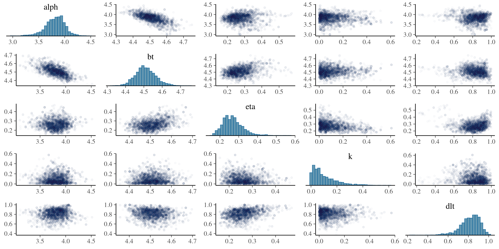Posterior predictive
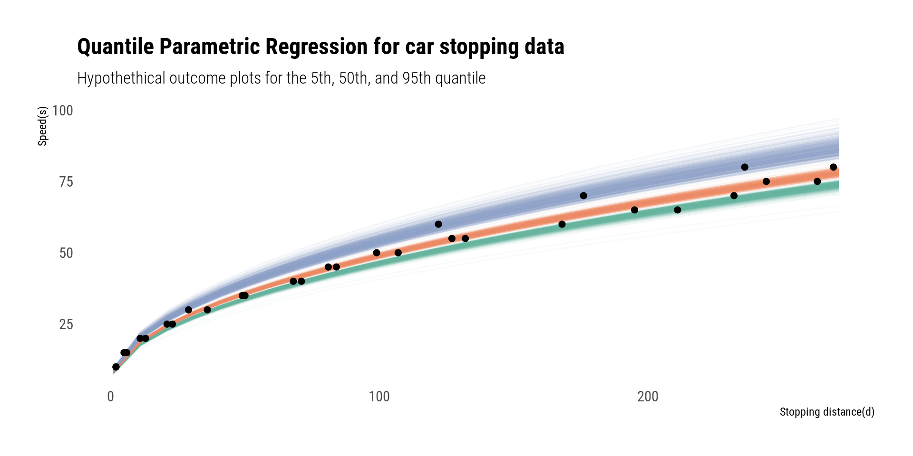References
Footnotes
For Bayesians, probabilities represent the state of knowledge
Potentially
Includes semi-bounded (LogMetalog) and bounded (LogitMetalog)